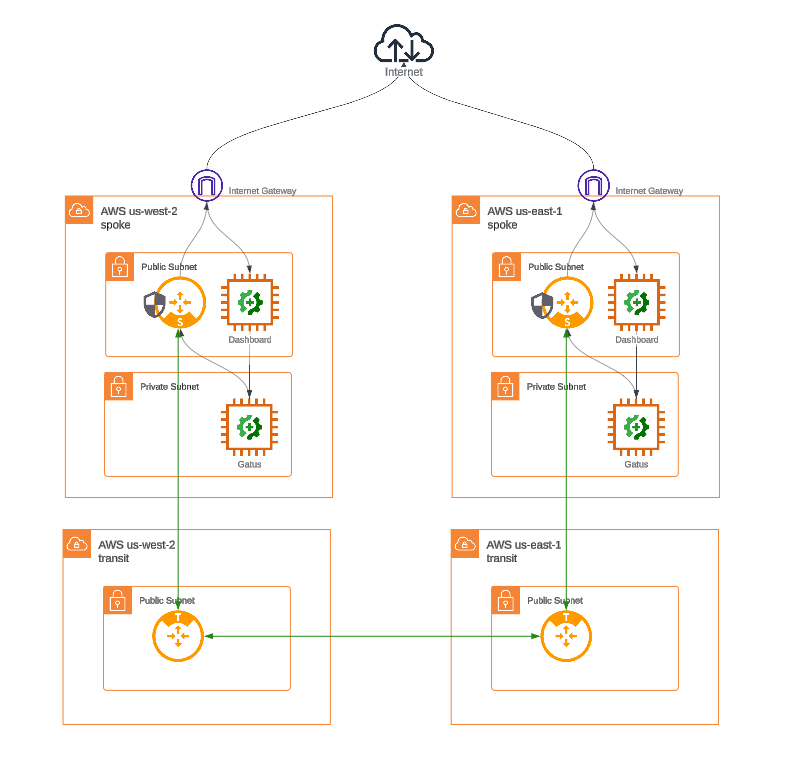
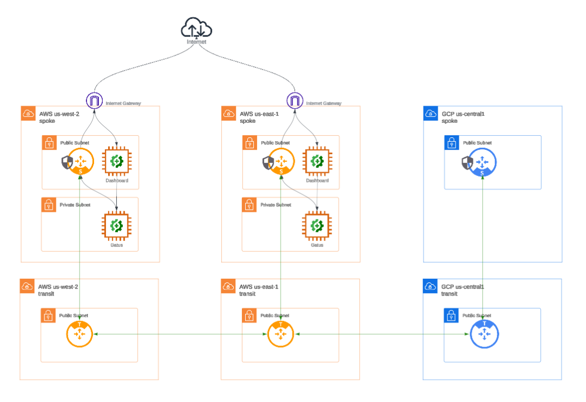

Scenario#
The focus of this course is to demonstrate automating cloud networks with code leveraging the Aviatrix platform. You’ll note there is explicit configuration in code, such as network gateways and firewall rules. Keep in mind that there is also implicit automation handled by the platform itself, such as routing. Also, note that the Aviatrix platform and its Terraform provider abstract your from the complexity and difference of any particular Cloud provider and provides consistent patterns and config regardless of CSP. Only a subset of Aviatrix use cases will be covered.
ACE Inc. is a fictitious company with infrastructure in AWS with 3 teams/stakeholders:
Network Operators (
NetOps)Application Developers (
DevOps)InfoSec team (
SecOps)
At times in this course, you’ll be asked to think from the perspective of these different personas as you perform different tasks. You most likely have experience with the intersection of these personas in the enterprise and the friction inherent in their roles.
Lab 1#
Lab1 begins with the following topology.

Note Gatus is being used to generate traffic from cloud instances.
As shown in the diagram there are the following resources:
2 Application (or spoke) VPCs with NAT Gateways provisioned - one in the
us-west-2region and one inus-east-1A
Gatusdashboard instance in each VPC’s public subnet. This instance provides a visual look at the traffic being generated by theGatusinstance in the corresponding private subnet.A
Gatusinstance in each VPC’s private subnet. ThisGatusinstance is generating both Internet-bound and internal (rfc1918) traffic.
For this lab, ACE Inc. management has a concern about the lack of visibility and control of Internet-bound traffic. You’ll onboard the VPCs by deploying Aviatrix spoke gateways, then switch Internet-bound traffic from the NAT gateway to the Aviatrix gateway to gain visibility of that traffic.
The final topology will look as follows:

Now that we know what our applications are connecting to on the Internet, we can now move to protect these VPCs by restricting outbound connections to only those the applications need. We’ll do this in lab2.
Lab 2#
In lab2 we’ll set up a CI/CD pipeline, using GitHub Actions and Terraform HCL
You’ll be asked to think in terms of the personas we noted above - NetOps, SecOps, DevOps.
Now that we have visibility into what our applications are accessing on the Internet, we’ll task our application developers (DevOps) with making this explicit in code. After all, they’re best in position to make the determination of application needs. DevOps will create a Pull Request (PR) against the networking code repository to do so. The act of creating the PR will kick off the pipeline, automatically performing a Terraform Plan and reporting its results back into the PR.
At that point, the SecOps engineer is tasked with reviewing the PR to ensure the changes are appropriate. Their approval is an indication that those responsible for the network (NetOps) are free to implement those changes.
When the NetOps persona merges the PR to the main branch, the automated pipeline will continue and effect those changes to the network.
The mandate from ACE Inc. management in lab1 has now been realized - the existing VPCs have been onboarded to the Aviatrix platform and protected.

Lab 3#
In lab3, new application requirements have been given to the network engineers that the application instances in each VPC can communicate over a secure and private network.
We’ll deploy a transit VPC in each region to achieve this, attaching each spoke to its respective transit and then peering the transits.
Since we invoked a zero-trust firewall policy in lab2, the applications will not initially be able to communicate despite the network path now being available.
We’ll again invoke our CI/CD pipeline to push our connectivity requirements through request, review, and implementation.

Lab 4#
For lab4, the requirement is to now extend our network to another cloud - GCP.
For this exercise, no code will be provided. Leveraging the Aviatrix Terraform provider documentation and the existing code as example, you’ll write and apply the configuration you put together.
You’ll be encouraged to leverage the LLM of your choice to help in completing this task.
